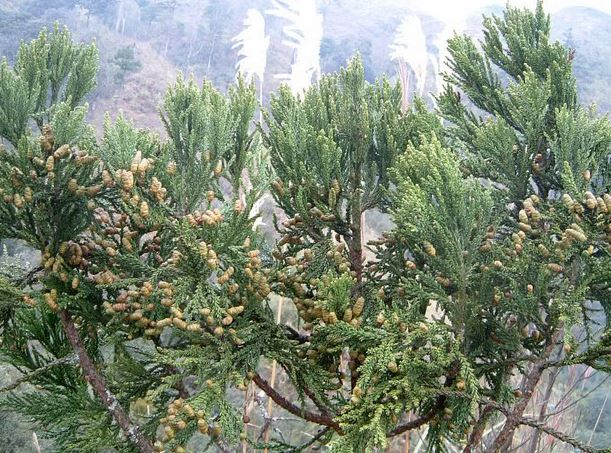

1. Đặc điểm hình thái
Cây gỗ nhỡ, cao 10 - 15 m, với đường kính đến 0,5 m, thường xanh, phân cành ít nhiều ngang, cành mang lá nhiều, hầu hết mọc xiên chen lấn nhau hoặc rủ xuống, tạo nên vòng lá hình tháp rộng ở cây non, xếp đều đặn hoặc tạo nên mặt phẳng cụt ở cây già; vỏ thân nhẵn, mỏng, màu đỏ tới nâu đỏ, có sợi. Lá biến đổi, thường có 3 kiểu trên một cây; trên cây hoặc cành non, thậm chí cả trên cành già mang kiểu lá non hình dùi, dài 15 - 20 mm, rộng 1,5 - 2 mm, xếp thành 4 dãy lá đính gần vuông góc với cành, có hai dải lỗ khí màu trắng chỉ ở mặt dưới; lá chuyển tiếp hình vảy, hình mũi mác, giống lá trưởng thành, nhưng dài hơn (5 - 7 mm), xếp thành 4 dãy xít nhau; lá trưởng thành hình vẩy ngắn xếp lợp lên nhau, dài 1,5 - 3 mm, rộng 1 - 1,3 mm. Nón đực hình bầu dục, dài 2,5 - 3,5 mm, rộng 2 - 2,5 mm, đơn độc, mọc ở đầu cành, mang 10 - 12 vảy nhị hình tam giác, mép hơi răng cưa, đỉnh nhọn, bên trong mang 2 túi phấn. Nón cái đơn độc, hình cầu, ở đầu cành mang 2 đôi vảy (rất hiếm khi 3), màu xanh khi non; khi nón chín có màu đen hay nâu xỉn, gần hình cầu, dài 9 - 11 mm, rộng 10 - 12 mm khi mở; các vẩy nón thường xếp thành đôi chéo chữ thập, hình khiên với 4 - 5 góc, mặt ngoài nhẵn có mũi nhọn cong. Hạt tối đa 8 - 9 trong một nón cái, hình trứng đều, màu nâu sáng hay nâu đỏ, có sẹo ở đáy, phẳng (dày 1,2 - 1,5 mm), dài 4,5 - 6 mm, rộng 4 - 5 mm , ở hai bên mang 2 cánh mỏng, rộng 0,5 - 1 mm.

2. Phân bố
Mới thấy ở Hà Giang (Quản Bạ: Cán Tỷ, Bát Đại Sơn; Yên Minh: Lao Và Chải).